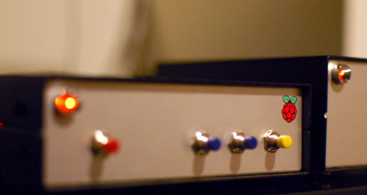

Building a hifi network music player

I use a turntable for most of the time, but sometimes using it is just a hassle. Getting up every 20 minutes to play music while working is no fun. Another need expressed by Gosia is internet radio. I researched external DACs for RaspberryPi, but there was (is?) issue with IO on rPi. I was even considering buying Mac Mini, but the price is way too high also for the used devices. Then I found Hifiberry - a DAC capable of playing 192kHz/24bit which connects directly to the I2S slot in RaspberryPi. Exactly what I was looking for. Non expensive, high quality DIY device.
Requirements
Plays from a playlist
After some research on Linux distribution I have chosen Volumio as it uses MPD and is advertising as a weapon for audiophiles. Volumio is also
working with Hifiberry with almost out of the box. It was a pleasent surprise to find it runing shairport, a server to stream from Apple devices.
Plays Internet Radio
We often listen to "Trójka", known Polish public radio station. Unfortunately it uses some strange codec which makes it unplayable under MPD. I've decided to use Mplayer.
Plays music test files
What's the fun of owning a DIY network player if one can't take it and test how it sound on your friend's system? I have some space on SD where I copied few files. No need to connect to the (possibly unsafe) local network.
Logic

Device has four buttons. stop / radio / music / test
If this works for you as well feel free to download the software from https://github.com/zalun/NetPlayer.
I've made a choice to not switch off the device on a usual basis, I can always run ssh and halt it from the terminal. This however might change in the future, I'm considering adding a button on the back panel.
Stop
Stops all music playing clients and restarts shairport. Stops everything even if it wasn't run by pressing a button.
Radio
Stations are defined in settings.py. Depending on the current state pressing the button is either playing latest played station or switching to the next one on the list.
Music
Plays current song or switches to the next one in playlist. Note that this assumes that a playlist has been created using an MPD client on a different device.
Test
Files are read from the directory specified in settings.py. Again - Plays current song or switches to the next one.
Build

Hearing that the standard impulse power source isn't so good for sound I bought a good quality DIY, but preassembled power source. I've placed it in a separate box as I might want to use it to power another device. The NetPlayer has power input and RCA output. It connects to the network using WiFi USB dongle. All music files are copied to the Synology NAS. Boxes used aren't pretty yet, also the buttons are temporary. In the future I will design the front panel with wooded buttons. There is also an idea to add display (LED or OLED).

First I've build a prototype using a prototype board. After it worked well for a week or so, I've ordered the boxes (I bought the cheapest from Modushop for about £10 each).

It does look well on the shelf even with the current design.

Software installation
- Volumio (contains Hifiberry hardware building information)
-
Mplayer
sudo apt-get install mplayer -
Git
sudo apt-get install git git-client -
Install Python
sudo apt-get install python-pip python-dev build-essential sudo pip install --upgrade pip sudo pip install -g RPi.GPIO -
Listen to buttons
cd ~volumio git clone git@github.com:zalun/NetPlayer.gitTo run the listener one needs to call
cd ~volumio sudo python -m NetPlayer.listen